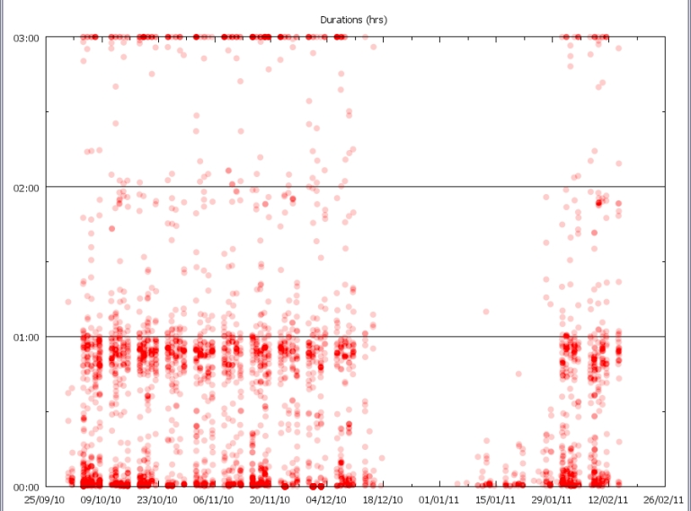
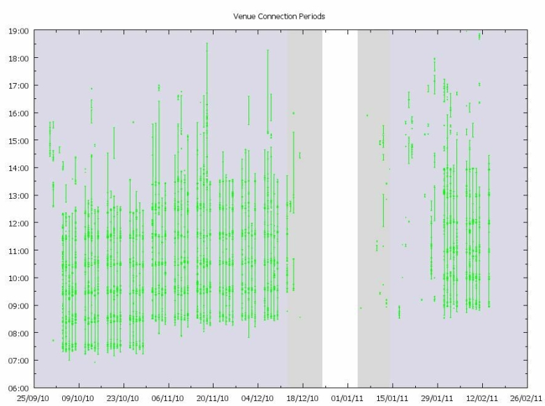
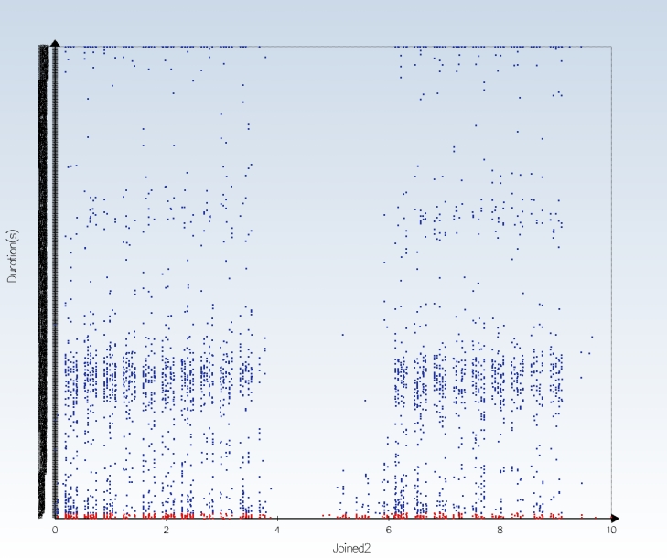
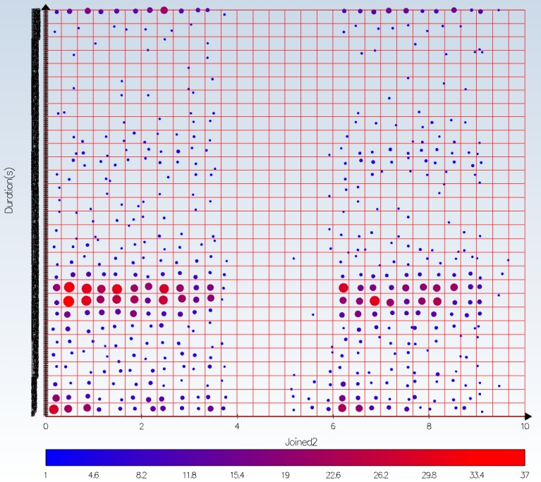
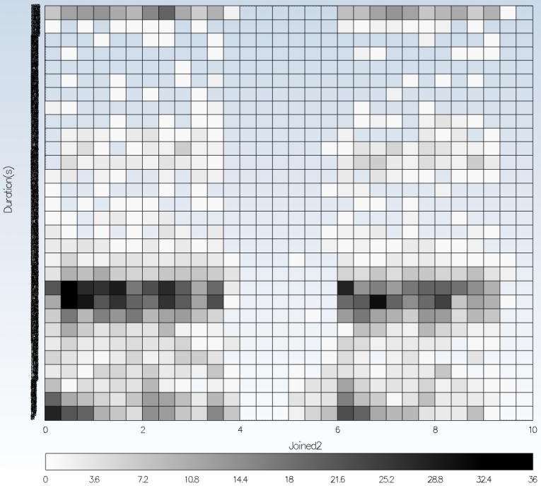

Exploiting Access Grid Activity Data (AGtivity)
From AGtivity we have a range of new results for the user communities. This is the start for visual
themes to create an ‘autobiography’ for video conferencing room nodes: Initial linking to
attendance rates through remote lectures.
A virtual venue called ‘MAGIC’ is used for postgraduate lectures. Two data mining views are shown
below that start to highlight individual course components.
The first shows duration values over time, allowing general usage to be considered (also
incorporating test periods and extra- curricular items that are seen in order to aid quality control):

The second graph shows connection periods.

Cancelled lectures, rapidly increasing and/or poor attendance, and extra lectures are visible.
Examples of visualisation choices
Various visualisation styles are shown below for AGtivity data, produced using code written by
Stephen Longshaw.
The first graph shows duration mapped against date and time for a series of events. A single dot
represents a single event; either a lecture, or an associated course meeting. As shown semester
1 and 2 are clearly visible, separated by a gap.

The elements in red indicate very short test sessions and were omitted from later analysis.
There are too many points to really make informed decisions; some could appear on top of others;
to help resolve this AGtivity used a technique called binning (i.e. clustering) the points shown by
the grid in the following graph. The dots are replaced by a single circle within each grid square with
a size that is proportional to the number of data points in that grid square.

The colour also represents the number of points and from this some quantifiable statistics can be
estimated. This shows the majority of sites attended for about one hour, but a significant
proportion attended for multiple concurrent hour-long lectures. Note the graph stops after 3 hours.
An alternative technique to using coloured circles is to colour the boxes themselves according to
the occurrence values.

There are many different options that could be considered. It is an open debate as to which style
of visualisation a particular user will prefer, but a key process is always to consider choice in
presentation and visualisation mode; and to see which method of presentation may provide the
best insight.